Why should we use functions?
• Say we have a bunch of statements that needs to be executed again and again.
• Instead of writing that piece of code repeatedly we can put them together, give it a label and just call the name for them to execute.
• We pass the data in a parentheses namely parameters.
Functions Syntax:
def function_name(parameters):
statement1
statement2
....
statementn
return values
•statements within function are Indented with 4 spaces.
Arguments:
•Data we pass to the function while calling it.
Parameters or Arguments?
The terms parameter and argument can be used for the same thing: information that are passed into a function.
A parameter is the variable listed inside the parentheses in the function definition.
An argument is the value that are sent to the function when it is called.
Example:
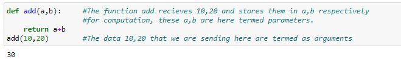
Some important workflow you need to consider while using the functions:
1) function name can be any valid python identifier.
2) parameters are optional.
3) any number of parameters (arguments) (0,1,2,3,...),
4) function can contain any number of statements.
5) function cannot be empty.
6) if do not want to specify any statement, then specify pass.
7) specifying the return statement is optional.
8) using the return statement we can return any number of values(1,2,3,4,...).
9) if we are not returning any value, then it will automatically return None.
**10) function will execute only when we call the function.
Syntax for calling a function.
function_name()
11)Function can be called only after it's function definition,otherwise a syntactical error is arose.
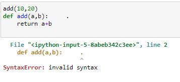
Different ways in which you can write a function:
1) function without parameters and without return values.
2) function with parameters and without return values.
3) function without parameters and with return values.
4) function with parameters and with return values.
1)Function without parameters and without return values.
• In this case,to perform computations the data needs to be hardcoded/dynamiclly(taking as input) taken withing the function, meaning we need to initialize the data(eg. a = 10) as we are not sending the data withing parentheses as there are no parameters.
Examples for functions with no parameters and noreturn values.
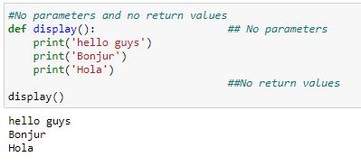
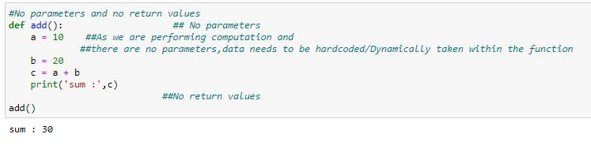
2)Function with paramerters and without return values.
• In this case the data need not be hardcoded/taking input within the function, infact we pass it as argument during function call.
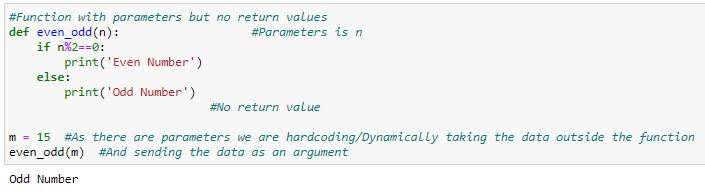
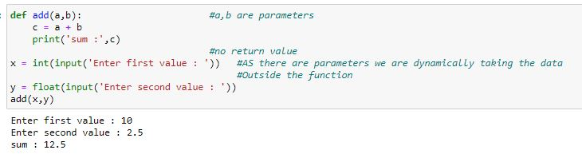
3)Function without parameters and with return values:
•AS there are no parameters data needs to be hardcoded/dynamically take within the function.
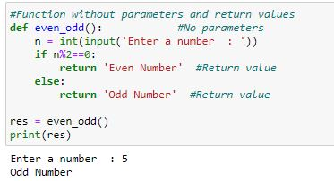
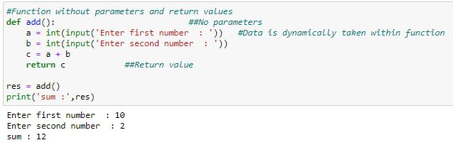
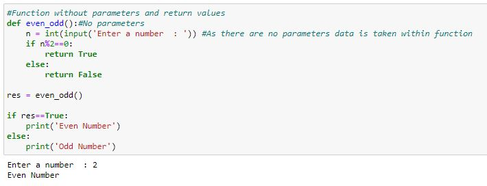
4)Function with parameters and return values:
•As there are parameters we can take the data outside of the function and pass them as arguments.
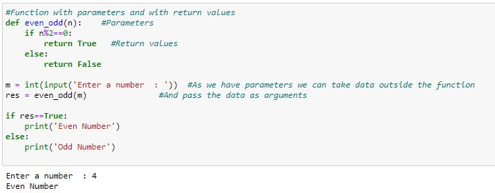
Basic calculator using functions:
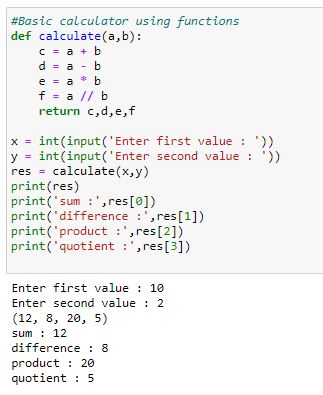
Finding factorial of a given number in all 4 styles:
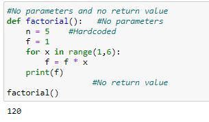
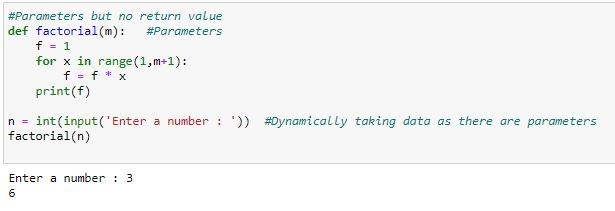
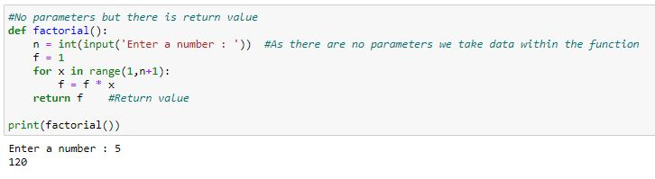
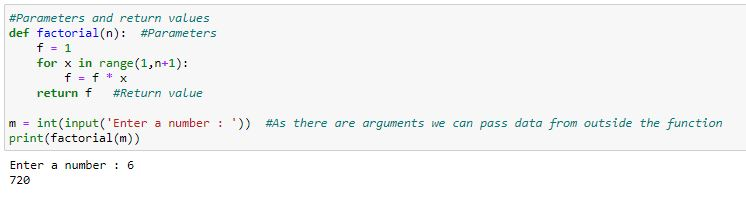
Recursion:
A function calling itself is termed as recursion.
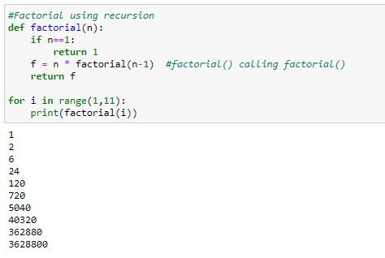